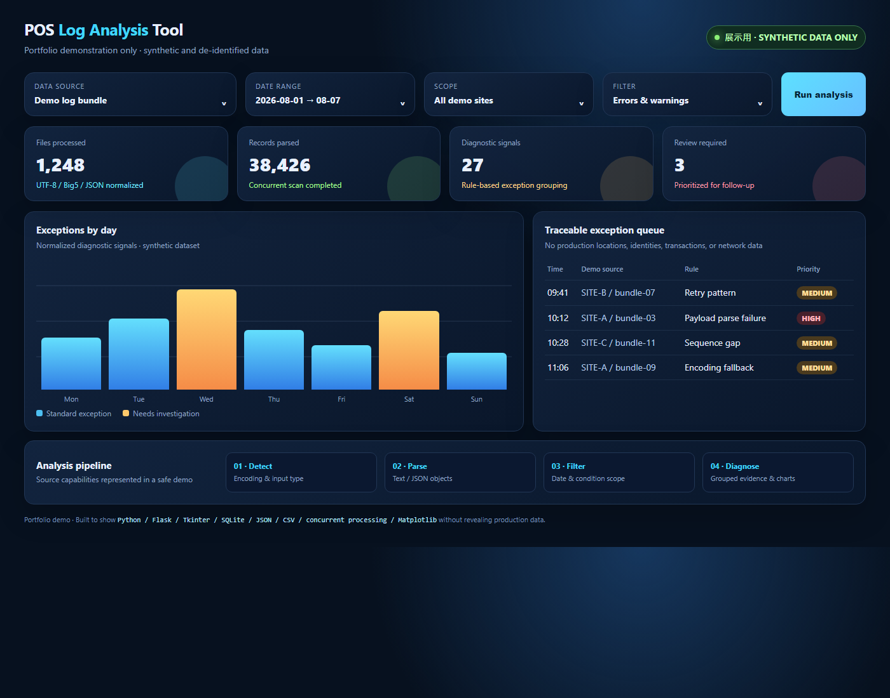
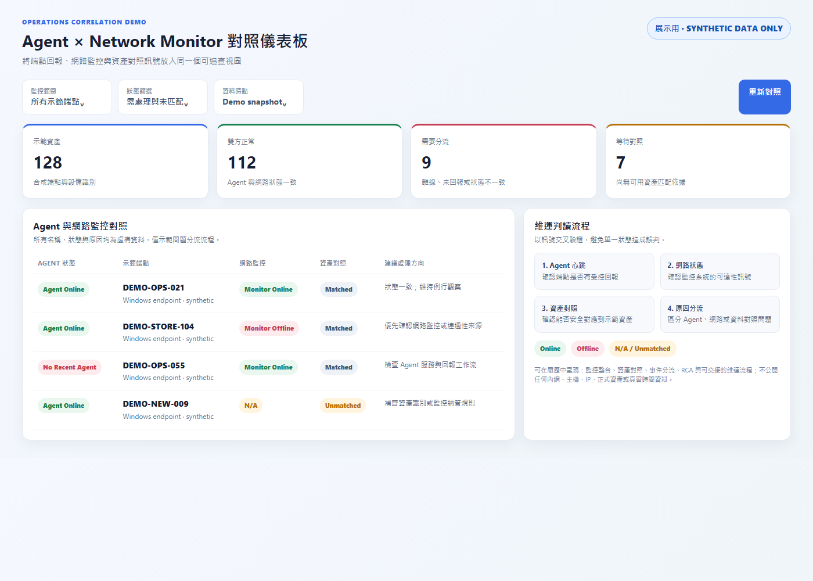
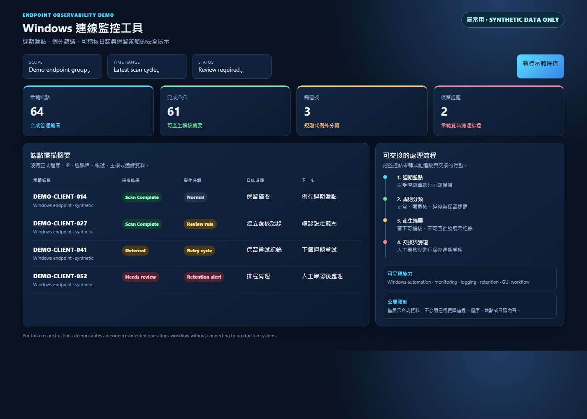
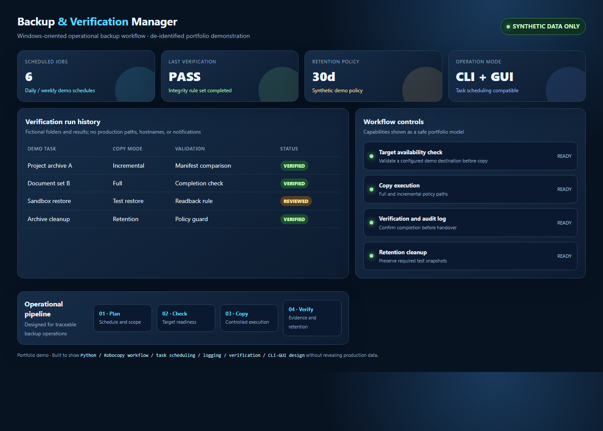
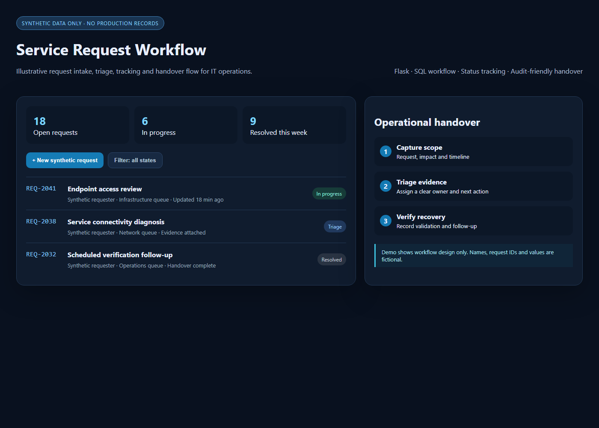
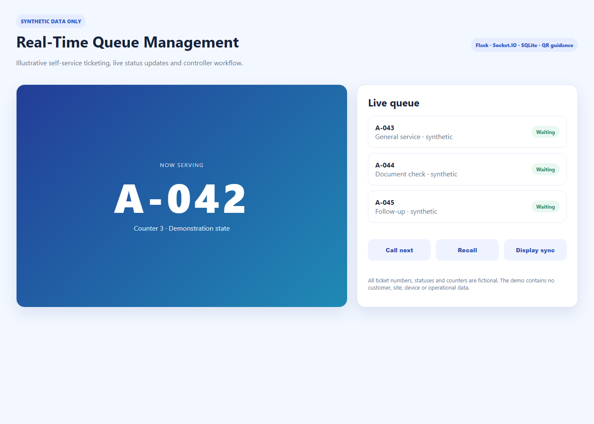

OBSERVABILITY
Agent × Network Monitor 對照
交叉比對端點回報、監控狀態、資產匹配與原因分流（DEMO-OPS 合成）。
開啟 Demo以多據點零售 IT 維運、監控整合、跨層根因分析與工作流程自動化為主軸。下列展示皆由合成資料重建，呈現方法、責任範圍與技術判讀，不含雇主、正式營運或內網資訊。
503 KB 去敏展示文件，供履歷附件與作品集引用。內容僅為方法與合成範例，並非正式交易資料。
下載 POS_Log_Analysis_Synthetic_Demo_20260822.pdf





先定義影響範圍與時間線，再以監控、網路、應用、日誌及資料流程交叉驗證；修復後驗證結果、記錄判讀依據，並留下可交接的下一步。